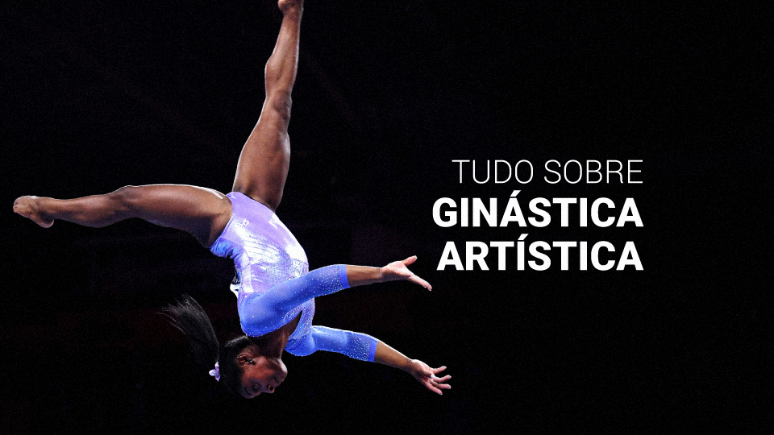

Ginástica
A ginástica artística, também chamada de ginástica olímpica, é uma modalidade esportiva que envolve um conjunto de movimentos. Esses movimentos exigem precisão, força, flexibilidade, agilidade, coordenação e equilíbrio. Portanto, o domínio do corpo é uma das principais características desses atletas. Quem pratica a ginástica artística são chamados de ginastas. Embora inicialmente ela era praticada somente por homens, hoje essa modalidade está presente em ambas categorias (masculina e feminina).